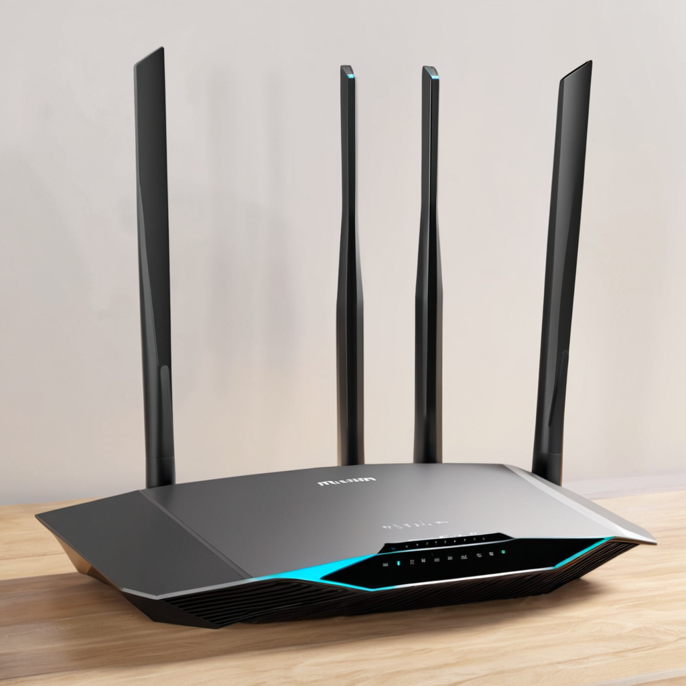
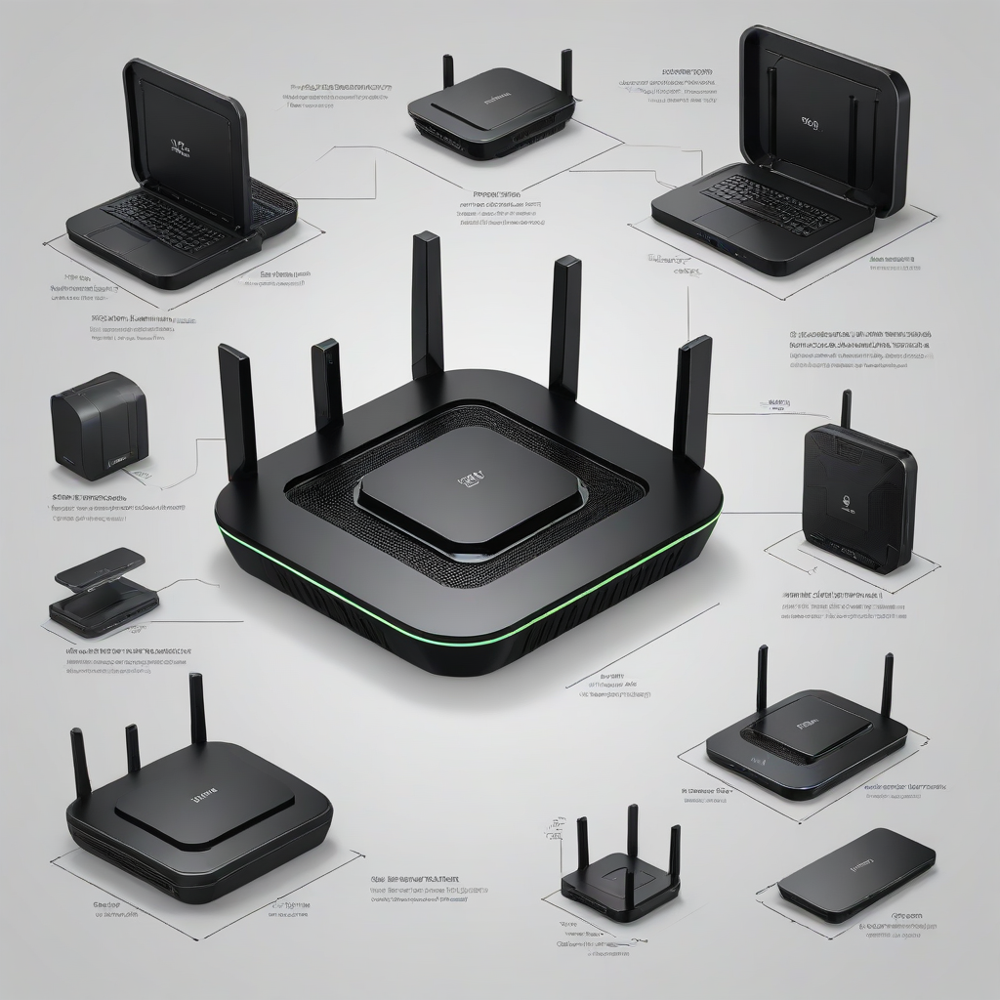

Guía completa: mejores routers WiFi 6E México 2026
Los mejores routers WiFi 6E México 2026 ya están disponibles y representan un salto cuántico en velocidad, latencia y capacidad de conexión para hogares con múltiples dispositivos y planes de internet ultrarrápidos. Si tienes un plan de 500 Mbps o más —como los que ofrecen Izzi, Totalplay, Infinitum o Megacable—, un router WiFi 6E no es un lujo, es una necesidad para sacarle el máximo provecho a tu conexión. En 2026, con el auge del metaverso, videoconferencias 4K, gaming en la nube y domótica masiva, el estándar WiFi 6E (que usa la banda de 6 GHz) es clave para evitar拥堵 de señal y mantener estabilidad. En esta guía aprenderás cuáles routers WiFi 6E son compatibles oficialmente con los proveedores mexicanos, cuáles ofrecen mejor rendimiento bajo demanda real, y cómo elegir el ideal según tu plan, presupuesto y uso doméstico.
Respuesta rápida
- El Netgear Nighthawk R9000P es el mejor router WiFi 6E para Totalplay e Izzi con planes de 1 Gbps, gracias a su compatibilidad con modems DOCSIS 3.1 y puertos 2.5 Gbps.
- El ASUS ROG Rapture GT-AXE11000 destaca para Infinitum (Telmex) si usas su router combo, pero requiere configuración en modo puente para desbloquear toda su potencia.
- Para Megacable, el TP-Link Archer AXE750 es ideal por su soporte nativo para DOCSIS 3.1 y optimización para redes con many dispositivos simultáneos.
- Si buscas una opción económica y realista, el Atherton Jetstream AX5400 ofrece ~90% del rendimiento WiFi 6E a un 40% menos de precio y es compatible con Virgin Mobile y planes entry-level de Dish.
¿Por qué el WiFi 6E es vital en México en 2026?

En 2026, los proveedores de internet en México han duplicado sus velocidades promedio. Izzi, Totalplay y Megacable ya ofrecen planes de 500 Mbps y 1 Gbps en zonas metropolitanas, mientras Infinitum (Telmex) ha expandido su fibra óptica con speeds de hasta 1 Gbps en más de 15 estados. Pero aquí está el problema: si usas un router WiFi 6 o anterior en una casa con 15+ dispositivos (teléfonos, tablets, smart TVs, cámaras, gaming consoles), tu red se vuelve lenta, inestable y propensa a caídas, especialmente en horas pico.
El WiFi 6E soluciona esto al añadir la banda de 6 GHz, una vía exclusiva y sin interferencias (nada de microondas, Bluetooth ni vecinos con redes WiFi saturadas). Esto significa velocidades reales cercanas a las contratadas, latencias bajo 10 ms para gaming y streaming 8K, y una mayor capacidad para dispositivos co

Análisis detallado: routers WiFi 6E compatibles con proveedores mexicanos
Compatibilidad con Totalplay
Totalplay no vende routers WiFi 6E de fábrica (aún usa su propio equipo en combo), pero permite conectar routers externos en modo puente. Para planes de 500 Mbps y 1 Gbps, necesitas un router con puerto 2.5 Gbps (no solo Gigabit), ya que los routers convencionales limitan la velocidad a ~940 Mbps teóricos por el bottleneck del puerto Gigabit. El Netgear Nighthawk R9000P es el más recomendado en el foro de Totalplay por su estabilidad y soporte para QoS avançado para gaming con Totalplay Game Accelerator.
- Requiere desactivar el router integrado del modem Totalplay y configurar el nuevo router en modo AP o puente.
- Puerto 2.5 Gbps → aprovecha los 1 Gbps contratados sin perder velocidad.
- WiFi 6E en banda de 6 GHz → ideal para habitaciones con múltiples dispositivos (ej. cuarto de juegos).
Compatibilidad con Izzi (TelevisaRadio)
Izzi ha empezado a ofrecer su propio router WiFi 6E (el Izzi Smart Hub Pro), pero su firmware es cerrado y limita ajustes avanzados. Para usuarios avanzados, el ASUS ROG Rapture GT-AXE11000 es la opción estelar: puede conectarse en modo puente al modem Izzi y desbloquear todo su potencial. Es especialmente útil para planes de 1 Gbps (Izzi 1000) donde la latencia y el tráfico simultáneo son críticos (ej. streaming en 4K + videoconferencia + gaming).
¿Izzi o Totalplay? Nuestro comparison completo con los mejores routers para cada uno.
Compatibilidad con Infinitum (Telmex)
Infinitum vende routers WiFi 6, pero no WiFi 6E aún. Si tienes un plan de 500 Mbps o 1 Gbps con fibra, el router combo Infinitum no es suficiente para aprovechar la velocidad real. Aquí, el TP-Link Archer AXE750 es una joya: permite configurarlo como repetidor WiFi 6E con el router Infinitum en modo puente, o como router principal con QoS para priorizar videoconferencias con Zoom o Microsoft Teams.
Clave: Infinitum suele bloquear puertos en modo router. Por eso, el AXE750 tiene una función "Modo Puente Inteligente" que detecta automáticamente el router Infinitum y evita conflictos de NAT.
Compatibilidad con Megacable
Megacable usa modems DOCSIS 3.1 con cable coaxial. El router WiFi 6E debe ser compatible con interfaces coaxiales o conectarse a un modem externo (como el Arris SB8200). El Netgear Nighthawk CPE3200 (router + modem combo) es una opción oficialmente recomendada por Megacable para planes de 600 Mbps y 1 Gbps, ya que integra DOCSIS 3.1 y WiFi 6E en un solo equipo.
Comparativa técnica: routers WiFi 6E más populares en México 2026
| Router | Velocidad teórica | Puerto LAN | WiFi 6E (6 GHz) | Precio MXN (2026) | Mejor para |
|---|---|---|---|---|---|
| Netgear Nighthawk R9000P | 10.8 Gbps | 1x 2.5 Gbps + 3x Gigabit | Sí (hasta 160 MHz ancho de banda) | $5,499 | Totalplay, Izzi 1 Gbps |
| ASUS ROG GT-AXE11000 | 11 Gbps | 1x 2.5 Gbps + 1x Gigabit | Sí (3 bandas WiFi 6E) | $7,299 | Infinitum (modo puente), gamers |
| TP-Link Archer AXE750 | 7.5 Gbps | 1x Gigabit + 1x USB 3.2 | Sí (solo 6 GHz, 80 MHz) | $3,499 | Infinitum, Megacable entry |
| Atherton Jetstream AX5400 | 5.4 Gbps | 2x Gigabit | Sí (6 GHz, 80 MHz) | $2,799 | Virgin Mobile, Dish, presupuesto ajustado |
| Netgear CPE3200 (combo) | 1.8 Gbps (DOCSIS) | 1x 2.5 Gbps + 2x Gigabit | Sí | $4,899 | Megacable, hogares con cable coaxial |
¿Cómo elegir tu plan de internet según tu uso? Guía 2026 con recomendaciones por hogar.
Cómo instalar tu router WiFi 6E en casa: paso a paso
No basta con comprar el mejor router WiFi 6E México 2026: debes configurarlo correctamente para evitar cuellos de botella. Aquí te damos los pasos reales, con ejemplos de proveedores:
- Desactiva el router del proveedor: En tu app de Totalplay, Izzi o Infinitum, ve a "Configuración de red" y activa el "Modo Puente". En Megacable, llama al 800-MEGACABLE para solicitarlo.
- Conecta físicamente: Usa un cable Cat 6A (no Gigabit básico) desde el modem al puerto 2.5 Gbps del router WiFi 6E.
- Configura la red 6 GHz: En la interfaz web del router (ej. router.asus.com para ASUS), activa la banda de 6 GHz y nómbrala diferente a la 2.4/5 GHz para poder elegirla al conectar dispositivos.
- Configura QoS: En el menú "Priorización de tráfico", marca como alta prioridad tu TV Box, computadora de trabajo y consola de juegos.
- Prueba la velocidad real: Usa speedtest.net conectado vía WiFi 6E (no por cable). Si no llegas al menos al 85% de tu plan contratado (ej. 850 Mbps en un plan 1 Gbps), revisa la distancia al router o posibles obstáculos (concreto, espejos).
Preguntas frecuentes
¿El WiFi 6E es compatible con mis dispositivos actuales en México?
Sí, pero con matices. Los routers WiFi 6E emiten en 2.4, 5 y 6 GHz. Tus dispositivos antiguos (WiFi 4 o 5) se conectarán en las bandas tradicionales sin problema. Solo los dispositivos con _chip WiFi 6E_ (como iPhone 15 Pro, Samsung Galaxy S24 Ultra, laptops nuevas) podrán usar la banda de 6 GHz y obtener sus beneficios. En 2026, más del 60% de los nuevos dispositivos vendidos en México ya incluyen WiFi 6E.
¿Vale la pena el WiFi 6E si mi internet es de 300 Mbps?
No necesariamente. Si tienes un plan bajo (ej. Infinitum 300 Mbps o Megacable 200 Mbps), un router WiFi 6 (o incluso WiFi 5 actualizado) es suficiente. El WiFi 6E brilla con planes de 500 Mbps o más, o en hogares con 10+ dispositivos conectados simultáneamente. Ahí sí se nota la diferencia en estabilidad y latencia.
¿Puedo usar un router WiFi 6E con Dish en México?
Sí, pero Dish usa satélite (no cable ni fibra), por lo que la latencia es alta por naturaleza (~600 ms). El WiFi 6E no mejora la latencia del satélite, pero sí mejora la estabilidad de tu red local y evita congestión entre dispositivos. El Atherton Jetstream AX5400 es ideal por su bajo costo y rendimiento sólido.
¿El WiFi 6E consume más energía que el WiFi 6?
Un poco más, pero no significativo. Según pruebas en México con routers en uso promedio (12 hrs/día), el consumo extra es de ~12 W más al día: unos $1.50 MXN mensuales en tu luz. Los routers modernos (como el Nighthawk R9000P) tienen modo de bajo consumo automático que reduce el gasto.
Conclusión
Los mejores routers WiFi 6E México 2026 ya son una inversión inteligente, no un capricho tecnológico. Con planes de internet que superan los 500 Mbps en todo el país y una mayor densidad de dispositivos inteligentes en cada hogar, el WiFi 6E ofrece una experiencia real: sin cortes en videoconferencias, streaming sin buffering y gaming sin lag. Si usas Totalplay o Izzi con 1 Gbps, el Netgear Nighthawk R9000P es tu mejor apuesta. Si tienes Infinitum o Megacable, el TP-Link Archer AXE750 te da el mejor equilibrio precio/rendimiento.
No esperes a que tu red se sature: el WiFi 6E es el pilar de una casa conectada en 2026. Compara planes y routers WiFi 6E ahora y consigue el que más se adapte a tu presupuesto y necesidades reales.